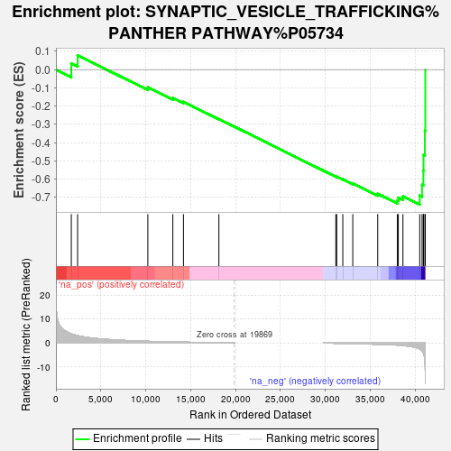
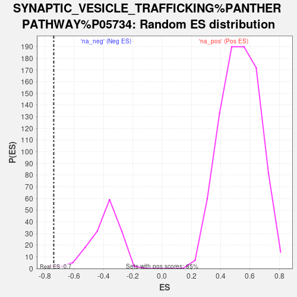

| | | Dataset | DS_vs_CTR_ranked_genelist |
| Phenotype | NoPhenotypeAvailable |
| Upregulated in class | na_neg |
| GeneSet | SYNAPTIC_VESICLE_TRAFFICKING%PANTHER PATHWAY%P05734 |
| Enrichment Score (ES) | -0.7386283 |
| Normalized Enrichment Score (NES) | -1.8810359 |
| Nominal p-value | 0.013157895 |
| FDR q-value | 0.049330607 |
| FWER p-Value | 0.515 |
Table: GSEA Results Summary

Fig 1: Enrichment plot: SYNAPTIC_VESICLE_TRAFFICKING%PANTHER PATHWAY%P05734
Profile of the Running ES Score & Positions of GeneSet Members on the Rank Ordered List
| SYMBOL | RANK IN GENE LIST | RANK METRIC SCORE | RUNNING ES | CORE ENRICHMENT | | 1 | SYT6 | 1711 | 3.820 | 0.0342 | No |
| 2 | UNC13D | 2416 | 3.090 | 0.0785 | No |
| 3 | STX2 | 10232 | 0.730 | -0.0972 | No |
| 4 | SYT15 | 13015 | 0.476 | -0.1554 | No |
| 5 | UNC13B | 14195 | 0.389 | -0.1764 | No |
| 6 | SYT11 | 18141 | 0.093 | -0.2706 | No |
| 7 | UNC13C | 31154 | -0.080 | -0.5856 | No |
| 8 | VAMP1 | 31256 | -0.082 | -0.5864 | No |
| 9 | STXBP1 | 31935 | -0.138 | -0.6002 | No |
| 10 | SYT1 | 33043 | -0.226 | -0.6226 | No |
| 11 | SYT7 | 35821 | -0.504 | -0.6802 | No |
| 12 | RAB3A | 38010 | -0.849 | -0.7165 | Yes |
| 13 | SYT3 | 38114 | -0.888 | -0.7014 | Yes |
| 14 | SYT2 | 38630 | -1.042 | -0.6933 | Yes |
| 15 | SNAP25 | 40496 | -2.479 | -0.6894 | Yes |
| 16 | SYT5 | 40756 | -3.254 | -0.6311 | Yes |
| 17 | STX1A | 40901 | -4.085 | -0.5535 | Yes |
| 18 | RIMS1 | 40918 | -4.322 | -0.4681 | Yes |
| 19 | STX1B | 41068 | -6.867 | -0.3354 | Yes |
| 20 | SYT12 | 41118 | -16.951 | -0.0000 | Yes |
Table: GSEA details [plain text format]

Fig 2: SYNAPTIC_VESICLE_TRAFFICKING%PANTHER PATHWAY%P05734: Random ES distribution
Gene set null distribution of ES for SYNAPTIC_VESICLE_TRAFFICKING%PANTHER PATHWAY%P05734